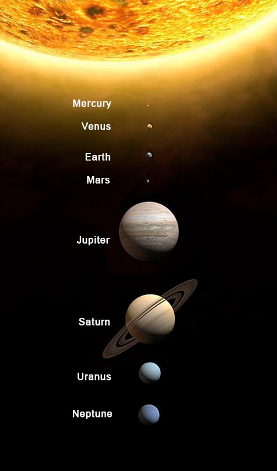

Rule: area-alt
Go to HomepageConfiguration
You may edit the options object below and re-analyze the fixture to update the results. For more info, see the aXe documentation for the Options parameter.
Fixture
Rendered View
Everything in the area below will be targeted by aXe when you analyze the page.
